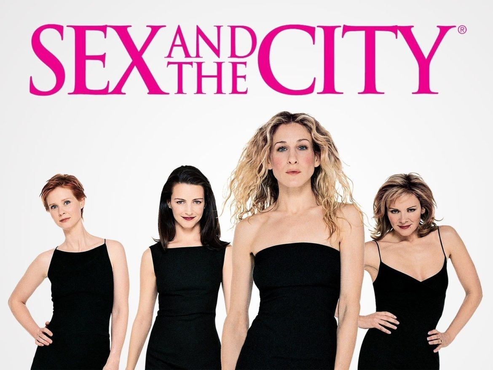

Sexo en la ciudad
Sexo en la ciudad (Sex and the City en inglés, también Sexo en Nueva York en España) es una serie de televisión estadounidense de comedia dramática y romántica creada por Darren Star para HBO. Es una adaptación del libro del mismo nombre escrito por Candace Bushnell. La serie se estrenó en los Estados Unidos el 6 de junio de 1998 y concluyó el 22 de febrero del 2004, con 94 episodios transmitidos en seis temporadas. Más información está disponible a leer en los enlaces arriba.
